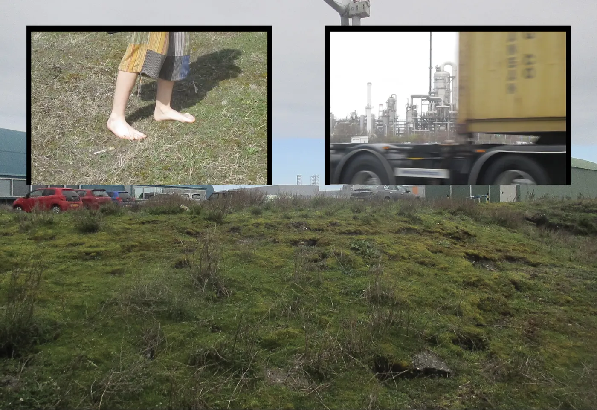
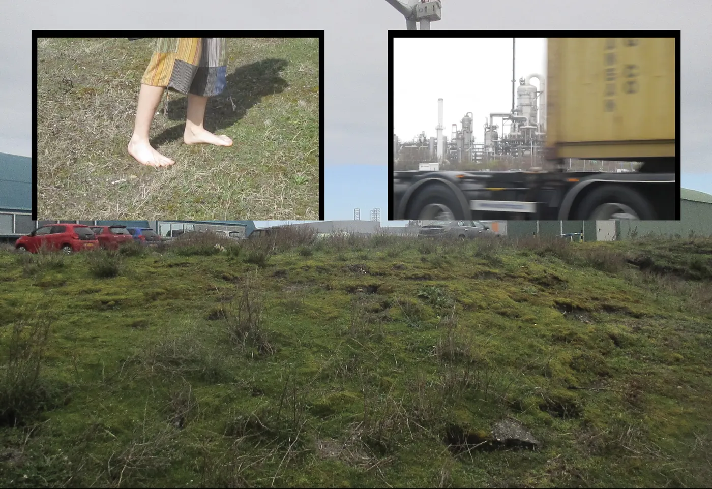

olvehyh
« FutureWrld »
A video documentation of FutureLand and around the Port of Rotterdam for purposes of field research.
Video | Videography | Photography
2:30min
Den Haag 2025
Camera: Canon IXUS 185
Music: Faith in Strangers by Andy Stott
2:30min
Den Haag 2025
Camera: Canon IXUS 185
Music: Faith in Strangers by Andy Stott


 
